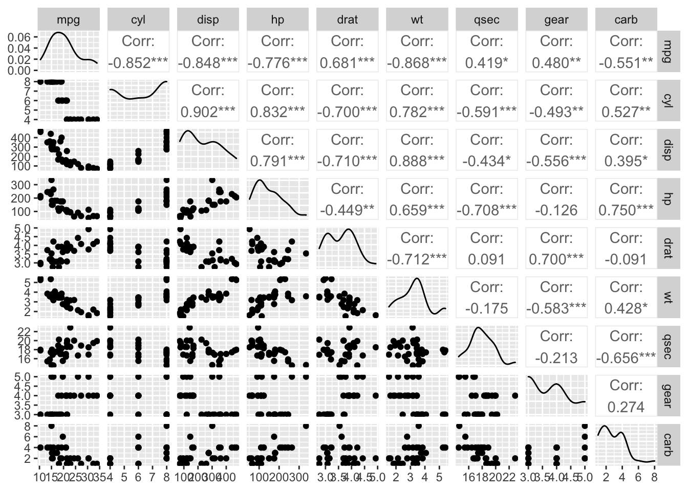
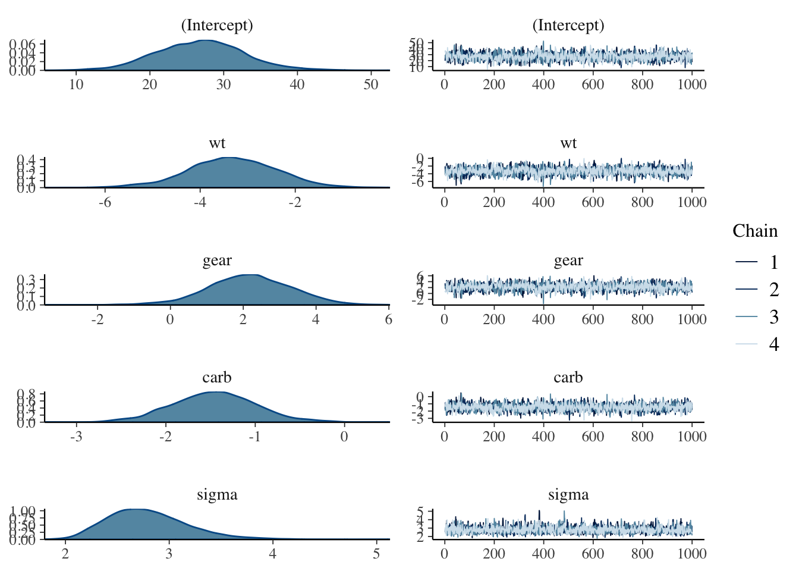
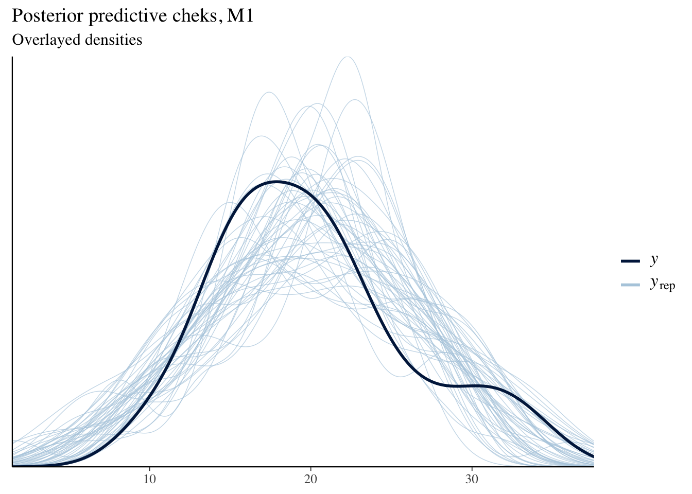
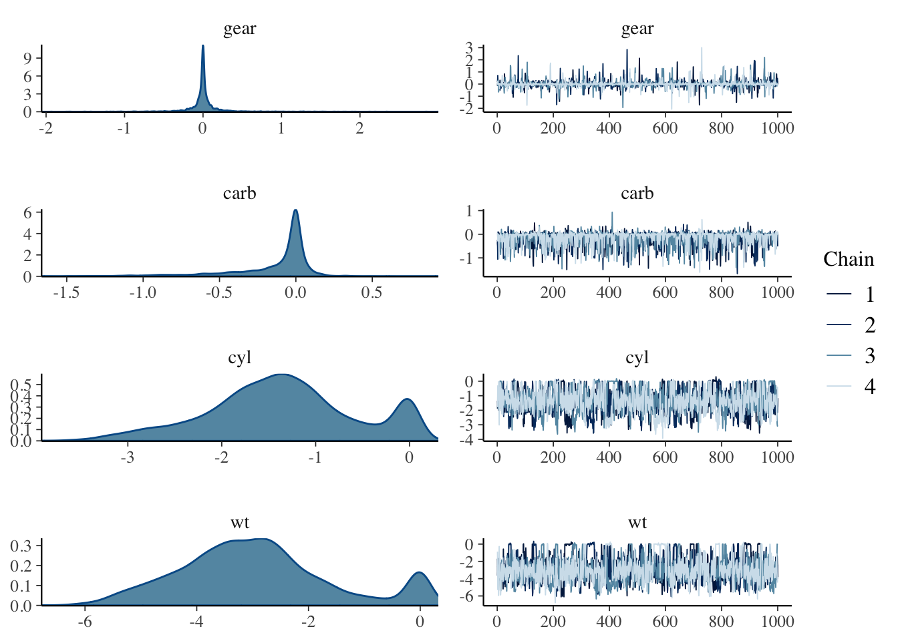
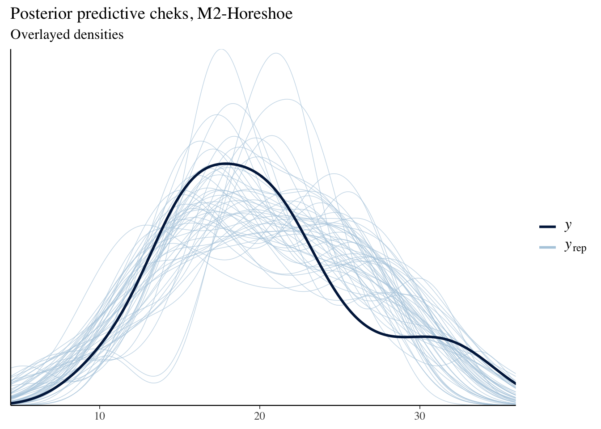
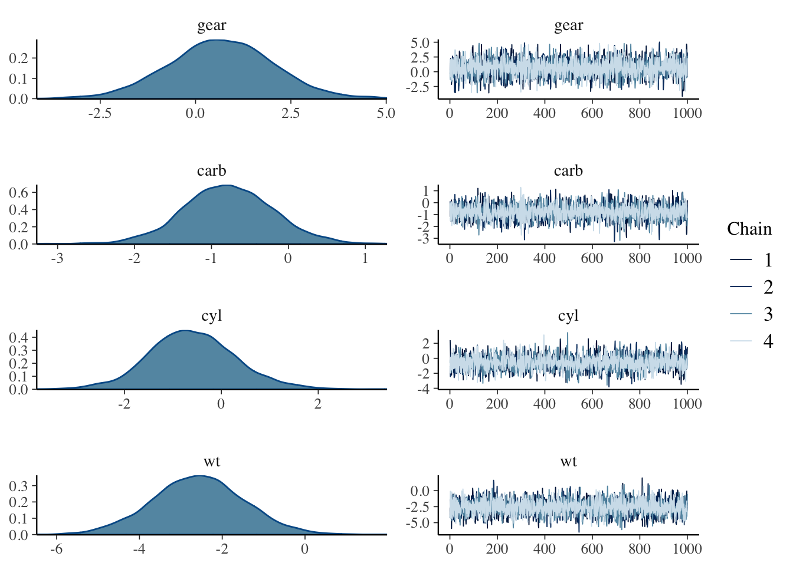
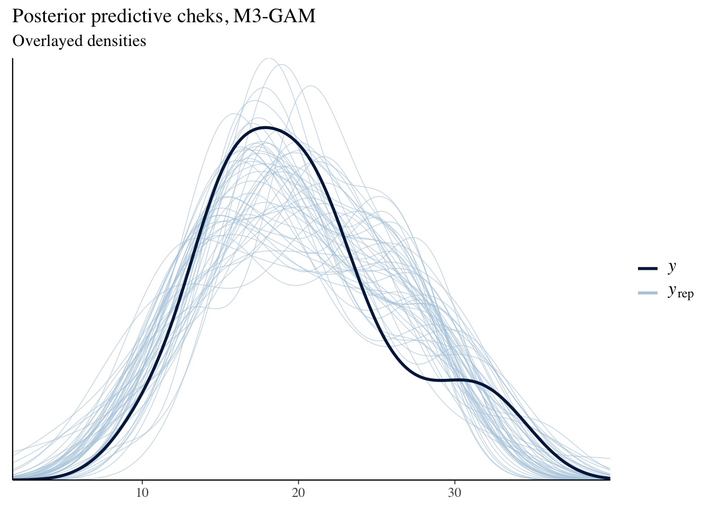
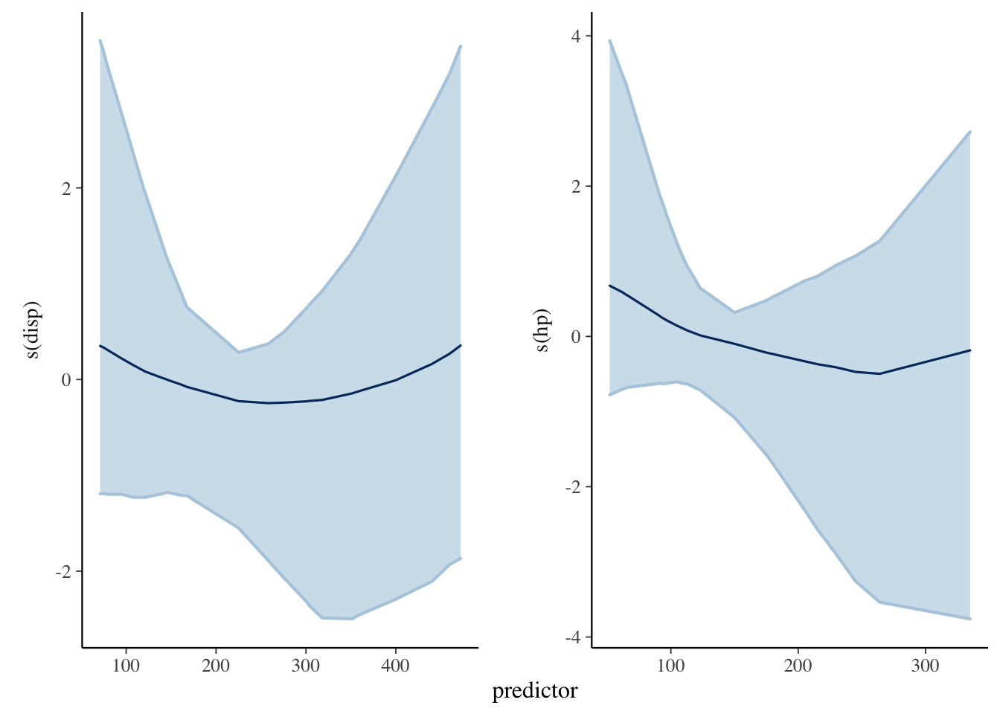

library(GGally)
library(ggplot2)
library(rstanarm)
library(flextable)
library(bayesplot)
options(mc.cores = parallel::detectCores())Este post presenta un análisis la base mtcars usando diferentes modelos Bayesianos
La base de datos mtcars contiene el registro de motores de carros mas populares en USA, 1974. los datos contienen 32 registros, con 10 atributos del motor.
Se desea predecir la capacidad de consumo de los motores, para eso se evaluaron las siguiente variables.
mpg: Millas por Galón. (Dependiente)hp: Caballos de fuerza.carb: número de carburadores.wt: peso del motor.gears: Número de cambios.vs: tipo de motor,recto:1otipo V:0.disp: El desplazamiento.am: transmisión,automático:0omanual:1.cyl: número de cilindros.
Todas las variables son numéricas, pero algunas son totalmente enteras, dificultando el proceso de análisis, se procede a revisar las correlaciones para revisar las interacciones lineales entre variables.
ggpairs(mtcars[,-c(8,9)])
Figure 1 muestra colinealidad entre las variables mpg, hp y wt. Por lo tanto, múltiples modelos deben ser considerados.
Modelo inicial
Para medir la relación de consumo de los motores utilizaremos GLM normal reducido obtenido en el post anterior, modelo M3. Para las priors, elegimos de tipo débil estándar, por lo tanto el modelo final es:
mpg_i \sim N(\mu_i,\sigma^2), \quad g(\mu_i) = \mu_i, \text{ y } \mu_i = \beta X_i. \mu_i = \beta_0 + \beta_1 wt+ \beta_2 gear + \beta_3 carb, Con priors: \beta_0 \sim \text{student-t}(4,0,10), \beta _{[1:3]}\sim N(0,5), \sigma \sim Cauchy_+(0,3). El siguiente código corre un GLM Gaussiano, la sintaxis provista por el paquete rstanarm es bastante similar a la sintaxis de la librería estándar, con la diferencia de la especificación de las prior a utilizar; ademas, se debe especificar el numero de cadenas a correr chains, el numero de iteraciones por cadena iter, y el numero inicial de iteraciones a remover warm.up. En este caso utilizaremos los valores por defecto.
bm1 = stan_glm(mpg~wt+gear+carb,data = mtcars,
prior = normal(0, 5),
prior_intercept = student_t(4, 0, 10),
prior_aux = cauchy(0, 3),
refresh = 0)
summary(bm1)
Model Info:
function: stan_glm
family: gaussian [identity]
formula: mpg ~ wt + gear + carb
algorithm: sampling
sample: 4000 (posterior sample size)
priors: see help('prior_summary')
observations: 32
predictors: 4
Estimates:
mean sd 10% 50% 90%
(Intercept) 26.8 5.9 19.3 26.9 34.2
wt -3.3 0.9 -4.5 -3.3 -2.1
gear 2.2 1.1 0.8 2.2 3.6
carb -1.5 0.5 -2.1 -1.5 -0.9
sigma 2.8 0.4 2.3 2.8 3.3
Fit Diagnostics:
mean sd 10% 50% 90%
mean_PPD 20.1 0.7 19.2 20.1 21.0
The mean_ppd is the sample average posterior predictive distribution of the outcome variable (for details see help('summary.stanreg')).
MCMC diagnostics
mcse Rhat n_eff
(Intercept) 0.1 1.0 1978
wt 0.0 1.0 1920
gear 0.0 1.0 2020
carb 0.0 1.0 2032
sigma 0.0 1.0 2392
mean_PPD 0.0 1.0 3131
log-posterior 0.1 1.0 1182
For each parameter, mcse is Monte Carlo standard error, n_eff is a crude measure of effective sample size, and Rhat is the potential scale reduction factor on split chains (at convergence Rhat=1).El algoritmo por defecto utilizado en Stan es un MCMC, ver Metropolis et al. (1953) y Betancourt (2017); y por lo tanto, es necesario revisar la convergencia de las cadenas simuladas. Los indicadores por defecto son:
Monte Carlo standard error (
mcse): mide el error de la aproximación del estimador obtenido en métodos de Monte Carlo, y se calcula para la media E[\theta |y].Reducción de escala potencial, \hat R (
Rhat): compara las varianzas promedio de las cadenas con las varianzas inter-cadenas, valores aproximados a uno indican convergencia.Effective sample size, ESS (
n_eff): Estima el tamaño de muestra de los estimadores asumiendo independencia, Este valor debe ser cercan al total de iteraciones realizado después delwarm.up.
En nuestro modelo observamos que nuestros errores de M.C. son muy cercanos a cero, los Rhat son todos uno, y los ESS son todos la mitad del total de iteraciones. En general el modelo parece no tener problemas, los ESS están un poco bajo, y esto se puede solventar aumentando el número de iteraciones o incrementando el warm.up. Para efectos de este estudio aceptaremos las aproximaciones obtenidas.
Una de las ventajas de los métodos Bayesianos es que permite evaluar la incertidumbre de los estimadores de forma automática. El resultado del código anterior muestra los intervalos de credibilidad al 90%.
mcmc_combo(x = bm1)
Es fácil visualizar las posteriors aproximadas mediante las cadenas obtenidas. Figure 2 muestra los gráficos de densidad para cada uno de los parámetros y en la columna derecha muestra las cadenas simuladas, las cuales se han mezclado y lucen estacionarias, indicando convergencia.
pp_check(bm1)+labs(title = "Posterior predictive cheks, M1",
subtitle = "Overlayed densities")
Finalmente, revisamos el ajusto del modelo, para eso usamos posterior predictive checks, la idea es comparar la distribución de la densidad predictiva del modelo con la densidad aproximada de la muestra. Figure 3 muestra la comparación de ambas densidades, ilustrando un buen ajuste del modelo.
Modelo completo con Horseshoe prior
El nuevo modelo a considerar es un GLM Gaussiano, agregando mas covariables y utilizando un prior regularizadora de Horseshoe para las covariables. Por lo tanto el modelo es:
M_2: \ mpg_i \sim N(\mu_i,\sigma^2), \quad g(\mu_i) = \mu_i, \text{ y } \mu_i = \beta X_i. \mu_i = \beta_0 + \beta_1 wt+ \beta_2 gear + \beta_3 carb + \beta_4 vs +\beta5 cyl +\beta_6 am, Con priors: \beta_0 \sim \text{student-t}(4,0,10), \sigma \sim Cauchy_+(0,3), \beta _{[1:6]}\sim N(0,\tau^2 _{[1:6]} \sigma^2_\beta), \tau^2 _{[1:6]} \sim Cauchy_+(0,1); \quad E[\sigma^2_\beta] = 0.01, \ V[\sigma^2_\beta] = 4. En este caso los valores globales df y scale, son hiper-parámetros que “regularizan” la Horseshoe prior a través de sus primeros dos momentos, para un mejor ajuste. El siguiente código presenta el modelo M_2. Debido a problemas de convergencia del modelo, es necesario aumentar adapt_delta de NUTS para un mejor salto en el HMC.
bm2 = stan_glm(mpg~wt+gear+carb+vs+cyl+am,data = mtcars,
prior = hs(df = 1,global_df = 4,global_scale = 0.01),
prior_intercept = student_t(4, 0, 10),
prior_aux = cauchy(0, 3),
refresh = 0,adapt_delta = 0.99)
summary(bm2)
Model Info:
function: stan_glm
family: gaussian [identity]
formula: mpg ~ wt + gear + carb + vs + cyl + am
algorithm: sampling
sample: 4000 (posterior sample size)
priors: see help('prior_summary')
observations: 32
predictors: 7
Estimates:
mean sd 10% 50% 90%
(Intercept) 38.1 2.7 34.9 38.3 41.3
wt -2.9 1.4 -4.6 -3.0 -0.7
gear 0.0 0.3 -0.1 0.0 0.2
carb -0.1 0.3 -0.5 0.0 0.0
vs 0.1 0.5 -0.1 0.0 0.3
cyl -1.4 0.8 -2.4 -1.4 -0.1
am 0.1 0.4 -0.1 0.0 0.3
sigma 2.8 0.4 2.3 2.8 3.4
Fit Diagnostics:
mean sd 10% 50% 90%
mean_PPD 20.1 0.7 19.2 20.1 21.0
The mean_ppd is the sample average posterior predictive distribution of the outcome variable (for details see help('summary.stanreg')).
MCMC diagnostics
mcse Rhat n_eff
(Intercept) 0.1 1.0 1535
wt 0.1 1.0 531
gear 0.0 1.0 3022
carb 0.0 1.0 2122
vs 0.0 1.0 1229
cyl 0.0 1.0 602
am 0.0 1.0 2533
sigma 0.0 1.0 1203
mean_PPD 0.0 1.0 3862
log-posterior 0.1 1.0 759
For each parameter, mcse is Monte Carlo standard error, n_eff is a crude measure of effective sample size, and Rhat is the potential scale reduction factor on split chains (at convergence Rhat=1).Los indicadores convergencia parecen bien excepto para los coeficientes wt y cyl que son los valores no nulos del modelo, que debido a ser valores atípicos y que este tipo de priors fuerzan a cero los coeficientes, es natural que el HMC tenga problemas para explorar la posterior de estos parámetros.
mcmc_combo(x = bm2,pars = c("gear","carb","cyl","wt"))
rstanarm::pp_check(bm2)+labs(title = "Posterior predictive cheks, M2-Horeshoe",
subtitle = "Overlayed densities")

Figure 4 parte (a) muestra las posteriors y traceplots para dos parámetros nulos (gear y carb) y dos parámetros significativos (cyl y wt). Los coeficientes nulos tienen posteriors con colas muy pesadas como se esperaba, pero los otros dos coeficientes tiene posteriors multi-modales indicando problemas de identificación u convergencia, para descartar el segundo problema se recomienda correr un mayor número de iteraciones. La parte (b) muestra el ajuste del modelo, que se observa un mejor ajuste que el modelo anterior.
Modelo GAM completo
M_3: \ mpg_i \sim N(\mu_i,\sigma^2), \quad g(\mu_i) = \mu_i,\ \text{y } \mu_i = f_1(x_i)+f_2(hp_i)+f_3(disp_i), donde:
f_1(x_i) = \beta_0 + \beta_1 wt+ \beta_2 gear + \beta_3 carb + \beta_4 vs +\beta_5 cyl +\beta_6 am, f_2(hp_i) = \sum_{s=1}^{10}\beta_s b_s(hp), \ y \ f_3(disp_i) = \sum_{s=1}^{10}\beta_s b_s(disp). Con priors:
\beta_0 \sim \text{student-t}(4,0,10), \beta _{[1:26]}\sim N(0,5), \sigma \sim Cauchy_+(0,3). El siguiente código presenta el modelo M_3.
bm3 = stan_gamm4(mpg~wt+gear+carb+vs+cyl+am+s(hp)+s(disp),data = mtcars,
prior = normal(0,5),
prior_intercept = student_t(4, 0, 10),
prior_aux = cauchy(0, 3),
refresh = 0)Dado que el numero de parámetros registrado es muy grande no presentaremos el resumen del modelo. Con respecto al diagnóstico de la aproximación MCMC, presentamos valores máximos, el mayor mcse fue de 0.2, todos los Rhat fueron igual a uno; y el menor ess fue de 1,224 iteraciones. Por lo tanto, aceptamos la aproximación obtenida.
mcmc_combo(x = bm3,pars = c("gear","carb","cyl","wt"))
rstanarm::pp_check(bm3)+labs(title = "Posterior predictive cheks, M3-GAM",
subtitle = "Overlayed densities")

Figure 5 muestra las densidades y traceplots para todos los parámetros lineales, donde observamos convergencia y densidades unimodales. La parte derecha muestra el ajuste del modelo, con densidades sobre-puestas presentando un buen ajuste del modelo M_3. Figure 6 muestra los efectos no lineales marginales del modelo para las covariables hp y disp. Los efectos marginales son suaves y casi constantes, indicando que el aporte no lineal es muy poco.
plot_nonlinear(bm3)
Leave-One-Out-Cross-Validation
Para evaluar el aprendizaje de cada modelo estimaremos la expected log-predictive density (elpd) de cada modelo usando LOO, Vehtari et al. (2015), los modelos que consideraremos son cuatro:
M_1: Modelo Gaussiano reducido.
M_2: Modelo Gaussiano completo,
Horseshoeprior.M_3: Modelo Generalizado aditivo Gaussiano completo
M_4: Modelo Gaussiano completo,
LASSOprior.
El siguiente código muestra del modelo M_4 con un prior regularizadora de tipo LASSO. Con respecto al ajuste, el mayor mcse fue de 0.1. Todos los Rhat fueron igual a uno, y el menor ess fue de 1,230 iteraciones. A diferencia del modelo Horseshoe (M_3), este modelo no encontró covariables nulas, todas las variables aportan algo al modelo, por lo tanto falla en regularizar los parámetros.
Importante: Que este modelo no regularice no implica que falle o es incorrecto. Este fenómeno se debe a que la prior LASSO tiene colas menos pesadas que la Horseshoe y por ende es más flexible.
bm4 = stan_glm(mpg~wt+gear+carb+vs+cyl+am,data = mtcars,
prior = lasso(df = 1,location = 0,autoscale = TRUE),
prior_intercept = student_t(4, 0, 10),
prior_aux = cauchy(0, 3),
refresh = 0,adapt_delta = 0.99)Ajustamos LOO para cada uno del modelo aproximando la elpd con muestreo por importancia de tipo Pareto (PISIS), en caso que una de las observaciones PISIS no converja (\hat k \geq 0.7), esta será calculada re ajustando el modelo nuevamente solamente en esa observación.
loo1 = loo(bm1,k_threshold = 0.7)
loo2 = loo(bm2,k_threshold = 0.7)
loo3 = loo(bm3,k_threshold = 0.7)
loo4 = loo(bm4,k_threshold = 0.7)
loo_compare(loo1,loo2,loo3,loo4) elpd_diff se_diff
bm4 0.0 0.0
bm3 -0.7 1.2
bm2 -1.0 1.7
bm1 -1.5 2.9 Los resultados muestran que el mejor modelo es el modelo aditivo Generalizado (GAM) completo M_3 indicando que los efectos no lineales si influyen en el ajuste y predicción del modelo.
Referencias
Betancourt, Michael. 2017. “A Conceptual Introduction to Hamiltonian Monte Carlo.” https://arxiv.org/abs/1701.02434.
Casella, George, and Roger Berger. 2001. Statistical Inference. Duxbury Resource Center. http://www.amazon.fr/exec/obidos/ASIN/0534243126/citeulike04-21.
DeGroot, M. H., and M. J. Schervish. 2012. Probability and Statistics. Addison-Wesley. https://books.google.es/books?id=4TlEPgAACAAJ.
Gelman, A., J. B. Carlin, H. S. Stern, D. B. Dunson, A. Vehtari, and D. B. Rubin. 2013. Bayesian Data Analysis, Third Edition. Chapman & Hall/CRC Texts in Statistical Science. Taylor & Francis. https://books.google.nl/books?id=ZXL6AQAAQBAJ.
Gelman, Andrew, Aki Vehtari, Daniel Simpson, Charles C. Margossian, Bob Carpenter, Yuling Yao, Lauren Kennedy, Jonah Gabry, Paul-Christian Bürkner, and Martin Modrák. 2020. “Bayesian Workflow.” https://arxiv.org/abs/2011.01808.
Martin, Osvaldo A., Ravin Kumar, and Junpeng Lao. 2021. Bayesian Modeling and Computation in Python. Boca Raton.
Metropolis, Nicholas, Arianna W. Rosenbluth, Marshall N. Rosenbluth, Augusta H. Teller, and Edward Teller. 1953. “Equation of State Calculations by Fast Computing Machines.” The Journal of Chemical Physics 21 (6): 1087–92. https://doi.org/10.1063/1.1699114.
Migon, Helio, Dani Gamerman, and Francisco Louzada. 2014. Statistical Inference. An Integrated Approach. Chapman and Hall CRC Texts in Statistical Science. Chapman; Hall.
Roback, paul., and Julie. Legler. 2021. Beyond Multiple Linear Regression: Applied Generalized Linear Models an Multilevel Models in R. Boca Raton.
Vehtari, Aki, Daniel Simpson, Andrew Gelman, Yuling Yao, and Jonah Gabry. 2015. “Pareto Smoothed Importance Sampling.” https://arxiv.org/abs/1507.02646.